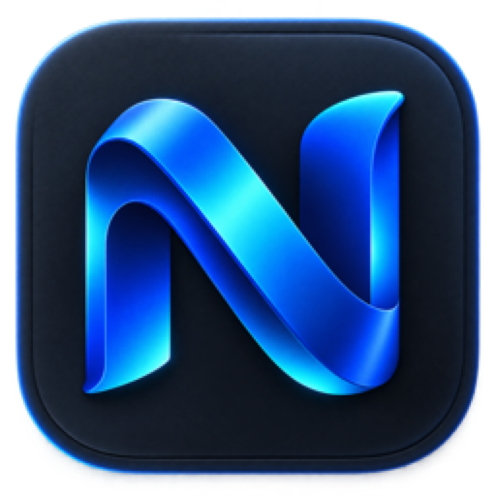

Знакомый браузер
Сайты, расширения, закладки и привычные инструменты Firefox без переучивания.

NeBrowserNeBrowser — независимый браузер AffPapa на открытом движке Firefox. Знакомый веб, собственное имя и стартовая страница affpapa.org.
macOS 14+ · Apple Silicon · MPL 2.0
Без притворства новым движком: upstream остаётся Firefox, а продукт получает отдельную идентичность и прозрачный release-процесс.
Сайты, расширения, закладки и привычные инструменты Firefox без переучивания.
NeBrowser, отдельный bundle ID, собственная иконка и стартовая страница AffPapa.
Исходники открыты. Пользовательские сборки проходят Developer ID, Apple notarization и Gatekeeper.
Техническая QA-сборка без Apple notarization: Gatekeeper может заблокировать обычный запуск. Не отключайте системную защиту — стабильный подписанный релиз выйдет отдельно.